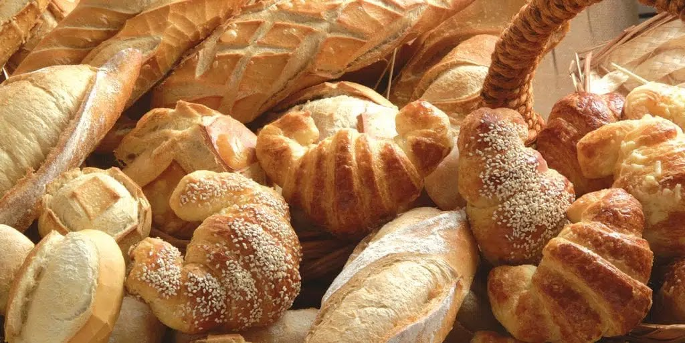
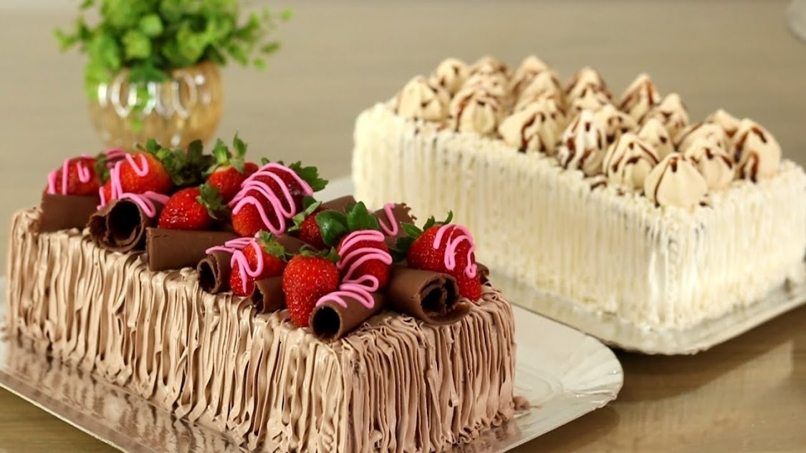

Temos um processo de fabricação 100% caseiro. Esse foi um dos maiores motivos que fizeram com que a Padaria Plus crescesse com as proporções que temos hoje. Temos um pão único de pura qualidade.
Uma viagem para a Ítalia nos fez conhecer alguns ingredientes que são essenciais para que a massa do bolo fique macia e incomparável.
Estamos localizados na Avenida Santos Agoz N° 456
Nosso telefone: (99) 99999-9999
Funcionamos nos seguintes horários:
Segunda à sexta: 7h às 16h
Sábado e domingo: 7h às 13h
Feriados: 8h às 12h